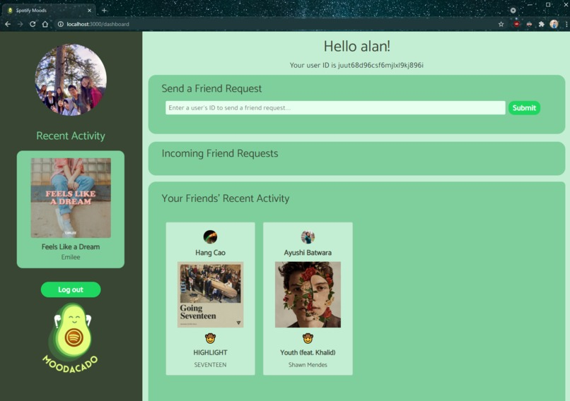

Experience
Internships 📋
Dell Technologies
Software Engineering Intern
- Designed and developed APIs to address targeted enterprise customer use-cases for multi-cloud management via Dell’s cloud platform using Swagger, Boto3 API, FastAPI, RegEx
- Developed visualizations to manage cloud inventory natively in AWS
- Participated in Dell’s Internal Hackathon and created an internal “Discover Intern” tool with Python and the Tkinter library
Bellweather
Co-Founder and Machine Learning Lead
- Co-founder of a Berkeley SkyDeck-backed startup that won 2nd place at Apple x UCSF’s iHackHealth Hackathon
- Developed a random forest ML model (99.6% accuracy) to predict an individual’s relative risk in extreme climate conditions across database of 10k+ patients based on health data captured from Apple Health, IBM Weather, EHRs, clinical risks
Boston Public Health Commission
Machine Learning Researcher
- Creating “digital twin pairs” for counties throughout the United States using a machine learning pipeline (CNNs, KNN, Regression) based on satellite imagery data, chronic disease, health system access, demographics, and deprivation to allow public health departments to collaborate with departments across the country most similar to them
Projects 📤
| PROJECT | DESCRIPTION |
|---|---|
COVID-19 Pro-Tips |
Built With:
|
Moodacado |
Built With:
|
Gitlet |
Built With:
|
Organizations 🧩
Machine Learning @ Berkeley (ML@B)
- Developing a reinforcement learning module to teach during the New Member Education Program
- Creating an ML Guidebook to cover ML concepts, including classical, deep learning, reinforcement, and unsupervised learning
Data Science Discovery Program
- Created data visualizations and performed analysis to identify the relationship between academic probation and academic performance among UC Berkeley undergraduate students based on the last 20 years of data
- Identified significant predictors of placement on academic probation to identify areas for increased intervention
Net Impact Berkeley
- Working with an electric vehicle (EV) charging company to develop go-to-market strategy for a machine learning SaaS product to be launched in the U.S.
- Conducting extensive research to determine entry strategies into the European Union for public EV charging
HOSA - Future Health Professionals
- Elected by 180+ chapters and 3000+ members to serve as Washington HOSA State Secretary
- Initiated statewide COVID-19 Chapter Challenges program to support pandemic relief efforts; engaged 45+ chapters in WA
- Executed 2 virtual state conferences, redesigned website, spearheaded media outreach effort, created executive mentorship series for local chapters to engage with alumni/professionals, and advocated to WA State Legislature for CTE funding
Teaching 📚
CS Mentors: CS 61A
Mentor, Spring 2022
- Teach weekly sections tutoring a group of five students by creating relevant curricula and reviewing practice problems to help prepare students for homework, labs, and exams
- Quotes from past students:
- "Very inclusive and extremely helpful when we don’t understand something. You also help us reach the answer ourselves instead of telling us straight which is nice :)"
- "She explains topics perfectly. She is very energetic during sections, which is very encouraging for us"
Machine Learning @ Berkeley: New Member Education
Education Officer, Fall 2022
- Leading the development of the Reinforcement Learning Module for the New Member Education Program, which includes creating lessons, notes, and lecturing a group of 10-12 students